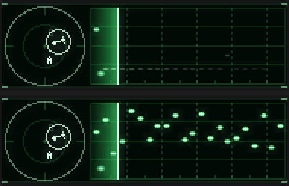
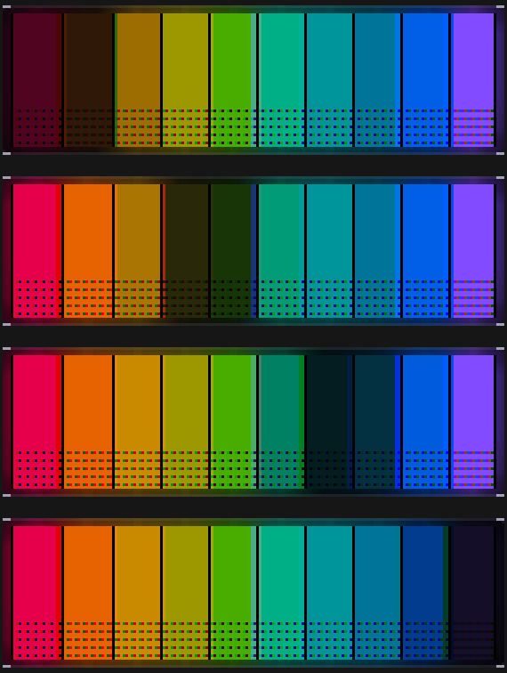
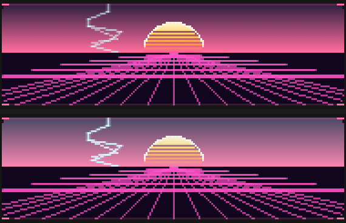
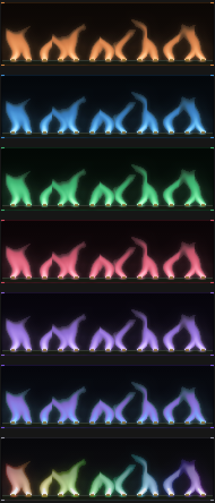
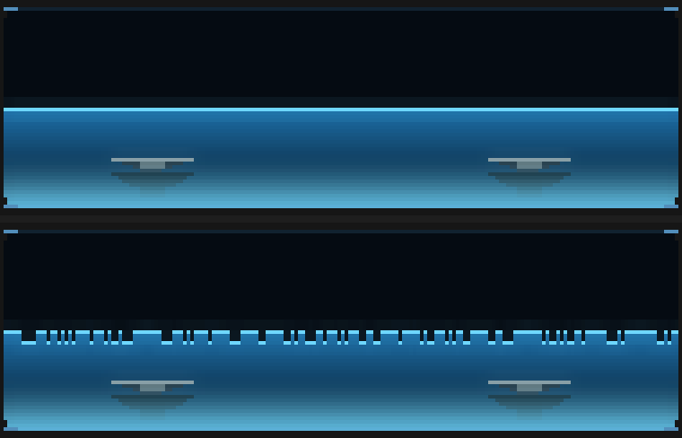

1VFD self-test
Every segment lights, then drains back to the reading.

What I want your eyes on: Whether the drain reads as a self-test sequence or just as a bright flash.
Newer: the four changes from your fluid / tape-deck / flourish report.
All thirteen families now have a flourish. Each fires on a rare, exceptional hit — about one every 30 seconds on real music — and each is the fault or the ritual that belongs to its own instrument.
Every one has a pixel-level test and was checked against deliberate mutations, so what is
below is not "does it work" but "is it right". Item 7, the Pantone plate slip, is still the one I
would change first. Regenerate these with
cargo test --release dump_flourishes -- --ignored, plus the per-family dumps named in each
caption's source.
Every segment lights, then drains back to the reading.
What I want your eyes on: Whether the drain reads as a self-test sequence or just as a bright flash.
Both needles driven to the end stop over 900ms with the OVER lamps lit.

What I want your eyes on: Whether 900ms is too slow — a real slam is faster, but faster was hard to see.
Three columns of full-height energy written into the history, so it scrolls away as data.

What I want your eyes on: Whether three columns is the right width. One read as merely a brighter column.
A cold blue haze fills every envelope — the wrong colour for the display, which is the point.

What I want your eyes on: Whether the blue is cold enough to read as a fault rather than a colourway change.
The unused digits all glow, as a badly-driven tube's do. 520ms, the shortest of the thirteen.

What I want your eyes on: Whether the live digit still clearly reads as the value. It keeps 68% of its legibility headroom, but that is a number, not an opinion.
The sweep free-runs, so the trace slides a screen-width of phase and the phosphor smears every phase it passes through.

What I want your eyes on: Whether the smear is too heavy. It is what a real scope does, but it does fill the screen.
A plate slips 3px vertically, so every element splits into red/green/blue ghosts.

What I want your eyes on: STILL THE STRONGEST OF THE THIRTEEN. It is what misregistration IS, and it clears in 900ms, but MISREG_Y comes down from 3px on one word.
The receiver saturates, so returns appear at every range at once.

What I want your eyes on: Whether the scatter is too dense. Note the display clears at the SWEEP's pace, not the jammer's — a jammed column keeps its false return until the beam next crosses it, which is how a PPI behaves.
A dry patch travels across the stripes, two at a time. The widths are zero-sum, so it removes INK and not WIDTH — every keyline stays put.

What I want your eyes on: Whether two stripes is the right width for the dry patch.
Five staggered strikes, each flashing the sky behind it. This replaced the vertical-sync roll you rejected.

What I want your eyes on: Whether five strikes in 1800ms is the right density. Toxic and Noir set bolt_bright = 0 and are deliberately exempt — the storm respects that.
Every burner guts to its pilot, then an ignition front runs along the manifold relighting them with an overshoot flare.

What I want your eyes on: The seven colourways are the other question — see the next item.
The surface breaks into a patchy froth and the tank runs slack. Three earlier models that INJECTED energy into the wave field all pushed crests through the top of the tank; this one only removes energy or bypasses the field.

What I want your eyes on: Whether the froth reads as boiling water or as notches. It is 3px deep and irregular by hash — on parity it rendered as a perfect sawtooth.
1.1Hz wow with 8.5Hz flutter on the transport, the wow reaching the tape slack.

What I want your eyes on: Nothing to judge in a still — this one only exists in motion. The plot is evidence the mechanism is right; judge the look in the running app.
Every cable slides to the other jack of its pair and back, so the chevron mirrors itself.

What I want your eyes on: Whether the plugs sitting mid-air between sockets (rows 2 and 4) read as cables in transit or as a mistake.